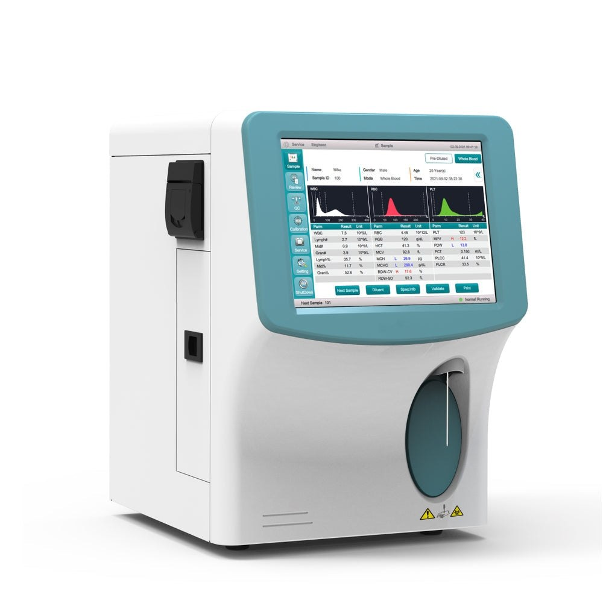
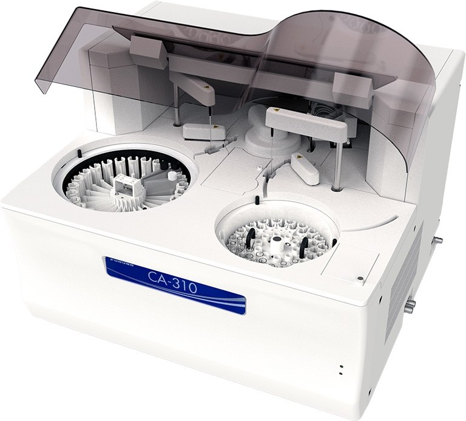
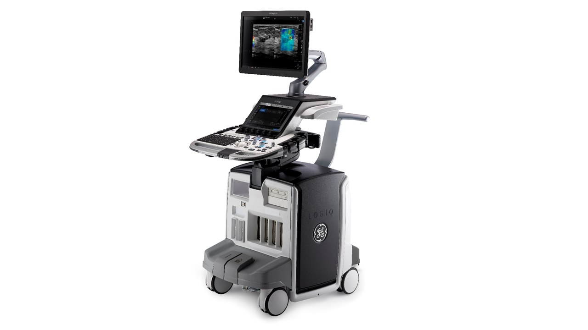
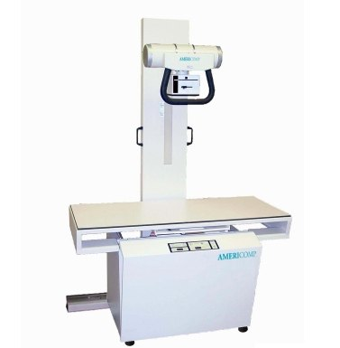
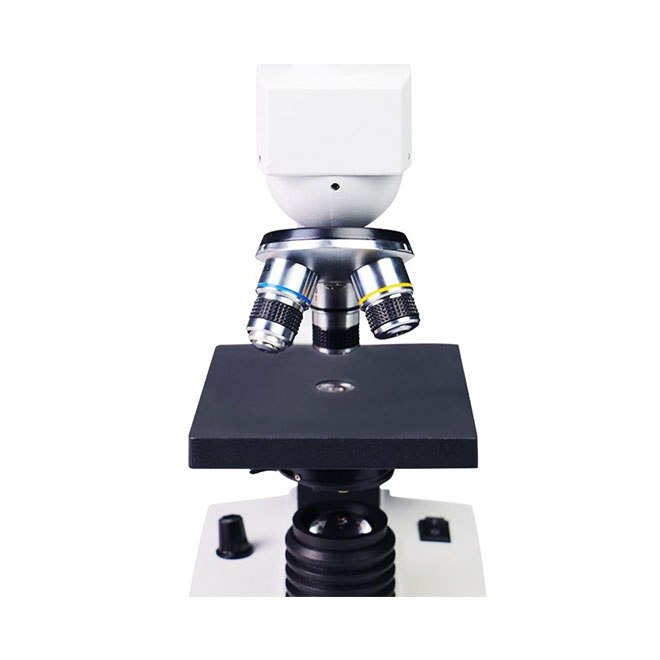

Our Equipment
Advanced Veterinary Technology
We invest in state-of-the-art medical equipment to ensure your pet receives the most accurate diagnoses and the highest standard of care.

CBC Analyzer
A laboratory machine that analyzes blood samples. It measures red blood cells (RBC), white blood cells (WBC), hemoglobin, hematocrit, and platelets to help diagnose infections, anemia, and blood disorders.

Biochemistry Analyzer
An automated laboratory instrument used to measure chemicals in blood, serum, plasma, or urine, such as glucose, cholesterol, liver enzymes, kidney function markers, and electrolytes.

Ultrasound Machine
A medical imaging device that uses high-frequency sound waves to create real-time images of internal organs, muscles, blood vessels, and pregnancies. It does not use radiation.

X-ray Machine
A diagnostic imaging device that uses X-rays to produce images of bones, lungs, teeth, and other internal structures, helping detect fractures, infections, and diseases.

Urine Analyzer
A laboratory instrument that automatically analyzes urine samples to detect glucose, protein, blood, bacteria, pH, and other substances for diagnosing kidney disease, urinary tract infections, and diabetes.

Microscope
An optical instrument that magnifies very small objects, allowing laboratory staff to examine cells, bacteria, parasites, blood smears, and tissue samples in detail.